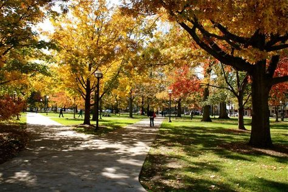

• ABOUT ME •
I wish to meet the full range of human needs on a sustainable basis.
- Master of landscape architecture, University of Michigan, Ann Arbor,MI
- I believe Lanscape design shaping novel living paradigm and providing ecosytem services towards a better life.
- I am a plants lover and I hope to contribute to conserve natural and environmental resources.

• SKILL •
- [SKILLS] Plant Materials Knowledge | Model Making | Graphic | Rendering | Diagram | Construction documentation
- [LANGUGAES] Fluent in English | Mother language in Mandarin
- [TECHNICAL] AutoCAD | Photoshop | Illustrator | InDesign | Rhino | ArcGIS | SketchUp | Lumion | Vray | Grasshopper | Microsoft Office Suite